<title>Stair Unit Change Brief</title>
<link rel="preconnect" href="https://fonts.googleapis.com">
<link rel="stylesheet" href="https://fonts.googleapis.com/css2?family=Barlow+Semi+Condensed:wght@500;600;700&family=IBM+Plex+Mono:wght@400;500&family=IBM+Plex+Sans:wght@400;500;600&display=swap">
<style>
:root {
  --paper:#EFF2F2; --surface:#FFFFFF; --ink:#15202A; --ink2:#4B5966; --rule:#D3DADE; --soft:#E6EBED;
  --accent:#1E5A86; --accentbg:#E1ECF4; --new:#C2410C; --newbg:#FDEBDD; --old:#8A96A0;
  --pass:#2F7A4F; --passbg:#E2F1E7; --warn:#9A620E; --warnbg:#FBEFD8; --fail:#B42318; --failbg:#FBE3E0;
  --display:"Barlow Semi Condensed","Arial Narrow",system-ui,sans-serif;
  --body:"IBM Plex Sans",system-ui,-apple-system,"Segoe UI",sans-serif;
  --mono:"IBM Plex Mono",ui-monospace,"Cascadia Mono",Consolas,monospace;
}
@media (prefers-color-scheme: dark) {
  :root:not([data-theme="light"]) {
    --paper:#0E151B; --surface:#152029; --ink:#E3E9ED; --ink2:#9DACB8; --rule:#27353F; --soft:#1B2833;
    --accent:#7DB7E3; --accentbg:#16283A; --new:#FB923C; --newbg:#3A2112; --old:#6B7985;
    --pass:#6CC790; --passbg:#17301F; --warn:#E6B45A; --warnbg:#382B12; --fail:#FF8C80; --failbg:#3A1B18; color-scheme:dark;
  }
}
:root[data-theme="dark"] {
  --paper:#0E151B; --surface:#152029; --ink:#E3E9ED; --ink2:#9DACB8; --rule:#27353F; --soft:#1B2833;
  --accent:#7DB7E3; --accentbg:#16283A; --new:#FB923C; --newbg:#3A2112; --old:#6B7985;
    --pass:#6CC790; --passbg:#17301F; --warn:#E6B45A; --warnbg:#382B12; --fail:#FF8C80; --failbg:#3A1B18; color-scheme:dark;
}
* { box-sizing:border-box; }
body { background:var(--paper); color:var(--ink); font:15.5px/1.6 var(--body); margin:0; padding-inline:16px; padding-block:28px 64px; }
.wrap { max-width:1120px; margin:0 auto; display:grid; gap:34px; }
h1,h2,h3 { font-family:var(--display); text-wrap:balance; margin:0; letter-spacing:.01em; }
h1 { font-size:clamp(34px,5vw,52px); line-height:1.02; }
h2 { font-size:27px; font-weight:600; }
h3 { font-size:21px; font-weight:600; line-height:1.15; }
p { margin:0; max-width:72ch; }
a { color:var(--accent); }
a:focus-visible { outline:2px solid var(--accent); outline-offset:2px; }
.mono { font-family:var(--mono); font-variant-numeric:tabular-nums; }
.eyebrow { font:600 12px/1 var(--mono); letter-spacing:.12em; text-transform:uppercase; color:var(--accent); }
header.top { display:grid; gap:12px; }
header.top p { color:var(--ink2); font-size:16.5px; }
.result { display:flex; flex-wrap:wrap; gap:0; border:1px solid var(--rule); background:var(--surface); }
.result div { flex:1 1 180px; padding:12px 16px; border-right:1px solid var(--rule); display:grid; gap:2px; }
.result div:last-child { border-right:0; }
.result span { font-size:12.5px; color:var(--ink2); }
.result b { font:600 23px/1.15 var(--display); font-variant-numeric:tabular-nums; }
.result b s { color:var(--ink2); font-weight:500; font-size:18px; margin-right:6px; }
section { display:grid; gap:16px; }
section > h2 { border-top:2px solid var(--ink); padding-top:12px; }
.rules { margin:0; padding:0; list-style:none; display:grid; grid-template-columns:repeat(auto-fit,minmax(240px,1fr)); gap:10px; counter-reset:r; }
.rules li { background:var(--surface); border:1px solid var(--rule); padding:12px 14px; font-size:14.5px; }
.rules li b { display:block; font-family:var(--display); font-size:17px; font-weight:600; }
/* figures */
.figs { display:grid; grid-template-columns:repeat(auto-fit,minmax(min(100%,460px),1fr)); gap:16px; }
.fig { margin:0; background:var(--surface); border:1px solid var(--rule); }
.fig:first-child { grid-column:1 / -1; }
.shot { position:relative; }
.shot img { width:100%; height:auto; display:block; }
.mk { position:absolute; transform:translate(-50%,-50%); width:28px; height:28px; border-radius:50%; background:var(--accent); color:#fff;
      font:600 13px/28px var(--mono); text-align:center; text-decoration:none; box-shadow:0 0 0 3px rgba(255,255,255,.85); }
.mk.new { background:var(--new); }
.mk:hover, .mk:focus-visible { transform:translate(-50%,-50%) scale(1.15); outline:none; }
.fig figcaption { padding:9px 12px; font-size:13.5px; color:var(--ink2); border-top:1px solid var(--rule); }
.fig figcaption b { color:var(--ink); font-family:var(--mono); font-weight:500; margin-right:6px; }
.key { display:flex; flex-wrap:wrap; gap:14px; font-size:13px; color:var(--ink2); align-items:center; }
.key i { display:inline-block; width:14px; height:14px; border-radius:50%; vertical-align:-2px; margin-right:6px; }
/* summary table */
.tw { overflow-x:auto; border:1px solid var(--rule); background:var(--surface); }
table { border-collapse:collapse; width:100%; font-size:14px; }
th, td { padding:8px 12px; border-bottom:1px solid var(--rule); text-align:left; vertical-align:top; }
thead th { font:600 11.5px/1.2 var(--mono); letter-spacing:.06em; text-transform:uppercase; color:var(--ink2); background:var(--soft); }
tbody tr:last-child > * { border-bottom:0; }
tbody th { font-weight:500; }
td.strong { font-weight:600; }
/* change cards */
.cards { display:grid; gap:14px; }
.card { background:var(--surface); border:1px solid var(--rule); padding:16px 18px; display:grid; gap:12px; scroll-margin-top:16px; }
.card:target { box-shadow:0 0 0 2px var(--accent); }
.card header { display:flex; gap:12px; align-items:center; }
.num { flex:none; width:36px; height:36px; border-radius:50%; background:var(--accent); color:#fff; font:600 16px/36px var(--mono); text-align:center; }
.meta { color:var(--ink2); font-size:13px; }
.nowto { display:grid; grid-template-columns:1fr 1.5fr; gap:10px; }
.nowto > div { padding:10px 12px; display:grid; gap:4px; min-width:0; }
.now { background:var(--soft); }
.to { background:var(--newbg); }
.nowto span, .how > span { font:600 11px/1 var(--mono); letter-spacing:.1em; text-transform:uppercase; color:var(--ink2); }
.to span { color:var(--new); }
.how ul { margin:6px 0 0; padding-left:20px; display:grid; gap:3px; }
.refs { display:grid; grid-template-columns:1fr 1fr; gap:8px; }
.refs figure { margin:0; border:1px solid var(--rule); background:var(--paper); }
.refs img { width:100%; height:auto; display:block; }
.refs figcaption { font:500 12px/1 var(--mono); color:var(--ink2); padding:7px 9px; letter-spacing:.04em; }
@media (max-width: 640px) { .refs { grid-template-columns:1fr; } }
.tagc { font:600 11px/1 var(--mono); letter-spacing:.06em; text-transform:uppercase; color:var(--warn); background:var(--warnbg); padding:4px 7px; vertical-align:middle; margin-left:6px; }
.card.consider { border-style:dashed; }
.cnote { background:var(--warnbg); padding:10px 12px; font-size:14px; max-width:none; }
.st.none, .st.site { color:var(--ink2); background:var(--soft); }
.st.cond { color:var(--accent); background:var(--accentbg); }
.whyload { display:grid; grid-template-columns:1fr 1fr; gap:10px; }
.whyload > div { border:1px solid var(--rule); padding:10px 12px; display:grid; gap:6px; align-content:start; min-width:0; }
.whyload > div > span { font:600 11px/1 var(--mono); letter-spacing:.1em; text-transform:uppercase; color:var(--ink2); }
.why ul { margin:0; padding:0; list-style:none; display:grid; gap:6px; font-size:14px; }
.ref { display:inline-block; font:600 11.5px/1.4 var(--mono); color:var(--accent); background:var(--accentbg); padding:0 5px; margin-right:6px; }
.load p { font-size:14px; }
.ba { display:grid; grid-template-columns:1fr 1fr; gap:6px; font-size:13px; }
.ba div { padding:6px 8px; background:var(--soft); }
.ba div:last-child { background:var(--passbg); }
.ba i { display:block; font:600 10.5px/1.3 var(--mono); letter-spacing:.08em; text-transform:uppercase; font-style:normal; color:var(--ink2); }
.st { display:inline-block; font:600 11px/1 var(--mono); letter-spacing:.05em; text-transform:uppercase; padding:4px 7px; white-space:nowrap; }
.st.pass { color:var(--pass); background:var(--passbg); } .st.part, .st.test { color:var(--warn); background:var(--warnbg); } .st.open { color:var(--fail); background:var(--failbg); }
@media (max-width: 760px) { .whyload { grid-template-columns:1fr; } }
.draw { overflow-x:auto; border:1px solid var(--rule); background:var(--paper); padding:8px; }
.sec { display:block; width:100%; min-width:520px; height:auto; max-height:320px; }
.sec .old { fill:none; stroke:var(--old); stroke-width:2; stroke-dasharray:5 4; }
.sec .old2 { fill:var(--soft); stroke:var(--old); stroke-width:1.5; }
.sec .new { fill:var(--new); stroke:var(--new); stroke-width:1; }
.sec .new2 { fill:var(--accent); stroke:var(--accent); stroke-width:1; }
.sec .newf { fill:var(--newbg); stroke:var(--new); stroke-width:1.5; }
.sec .void { fill:var(--paper); stroke:none; }
.sec .rib { stroke:var(--new); stroke-width:1.5; }
.sec .dim { stroke:var(--ink2); stroke-width:1.2; }
.sec .axle { fill:none; stroke:var(--ink2); stroke-width:1.5; stroke-dasharray:3 3; }
.sec .grd { stroke:var(--ink); stroke-width:2; }
.sec .newl { stroke:var(--new); stroke-width:4; }
.sec .old2l { stroke:var(--old); stroke-width:4; }
.sec .postl { stroke:var(--ink2); stroke-width:6; }
.sec text { fill:var(--ink); font-family:var(--mono); font-size:13px; }
.sec .tag { fill:var(--ink2); font-size:12px; letter-spacing:.08em; }
.sec .note { fill:var(--new); font-size:12.5px; }
.sec .note2 { fill:var(--accent); font-size:12.5px; }
.notmodel { margin:0; padding-left:20px; display:grid; gap:8px; color:var(--ink2); max-width:80ch; }
.notmodel b { color:var(--ink); }
footer { color:var(--ink2); font-size:12.5px; border-top:1px solid var(--rule); padding-top:12px; display:grid; gap:4px; }
@media (max-width: 700px) { .nowto { grid-template-columns:1fr; } }
@media (prefers-reduced-motion: reduce) { .mk:hover { transform:translate(-50%,-50%); } }
</style>

<main class="wrap">
  <header class="top">
    <div class="eyebrow">SketchUp change brief · folding stair unit</div>
    <h1>Stair unit change brief</h1>
    <p>The geometry changes that make the current model meet the event load sheet, updated with your decisions: five changes to draw
       (1, 2, 3, 4, 10), one to consider (7), and the rest decided as no change. Nothing folds or moves differently: the unit keeps its length,
       width, fold positions, rail shapes and every pin and axle hole. Everything stays aluminium. Sizes come from the load test; the numbers
       on the pictures match the numbered changes.</p>
    <div class="result">
      <div><span>Weight per unit</span><b><s>71.6</s>≈ 68 kg</b></div>
      <div><span>Crowd load on the stair</span><b><s>1.0</s>7.5 kN/m²</b></div>
      <div><span>Push on the top rail</span><b><s>0.16</s>3.0 kN/m</b></div>
      <div><span>Gap under each step</span><b><s>125</s>100 mm</b></div>
    </div>
  </header>

  <section>
    <h2>Before you start</h2>
    <ul class="rules">
      <li><b>Holes stay put</b>Don’t move any pin hole, axle centre or hook opening. The folding depends on them.</li>
      <li><b>Same overall unit</b>Length, width, fold angles (flat, 35°, 49.4°) and the gap between units stay as they are.</li>
      <li><b>Left rails stay open</b>The left-hand rails must remain open-top channels: a second unit’s right-hand rails slide into them.</li>
      <li><b>Three handrail sets</b>Apply changes 4–9 to the catwalk, standard and steep handrail sets. The 300 mm handrail extension is only for the standard stair.</li>
    </ul>
  </section>

  <section>
    <h2>Where the changes are</h2>
    <div class="key"><span><i style="background:var(--accent)"></i>change to an existing part</span><span><i style="background:var(--new)"></i>new part: shows where it goes</span><span>Click a number to jump to its change. In each change’s own pictures, <b style="color:#E8590C">orange</b> = change or new part, <b style="color:#D11A1A">red</b> = remove.</span></div>
    <div class="figs">
    <figure class="fig" id="figA">
      <div class="shot">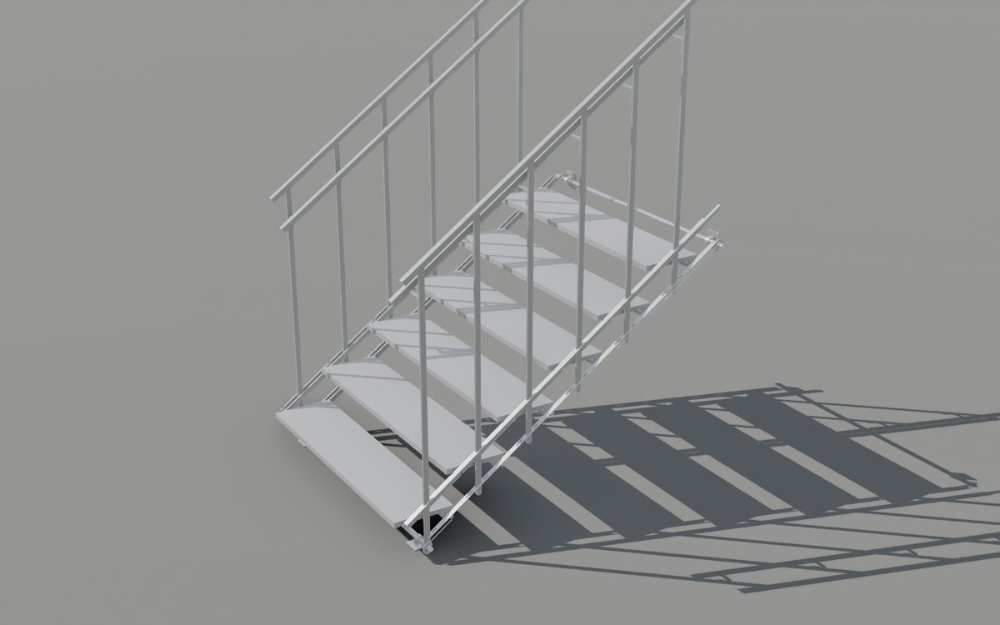<a class="mk" href="#c1" style="left:50.49%;top:50.99%" aria-label="Change 1">1</a><a class="mk" href="#c2" style="left:57.21%;top:62.52%" aria-label="Change 2">2</a><a class="mk" href="#c2" style="left:54.02%;top:62.2%" aria-label="Change 2">2</a><a class="mk" href="#c4" style="left:52.99%;top:48.1%" aria-label="Change 4">4</a><a class="mk" href="#c7" style="left:54.4%;top:24.69%" aria-label="Change 7">7</a><a class="mk" href="#c10" style="left:72.35%;top:39.46%" aria-label="Change 10">10</a></div>
      <figcaption><b>Fig A</b> Standard stair, right-hand side</figcaption>
    </figure>
    <figure class="fig" id="figB">
      <div class="shot">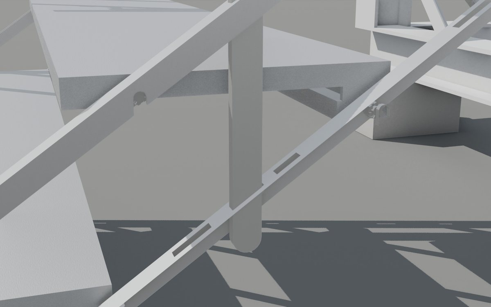<a class="mk" href="#c4" style="left:50.0%;top:9.11%" aria-label="Change 4">4</a><a class="mk" href="#c4" style="left:50.0%;top:72.62%" aria-label="Change 4">4</a><a class="mk" href="#c2" style="left:29.76%;top:33.89%" aria-label="Change 2">2</a></div>
      <figcaption><b>Fig B</b> Bottom of a handrail pole: its lower end is the lock pin through the guide rails</figcaption>
    </figure>
    <figure class="fig" id="figC">
      <div class="shot">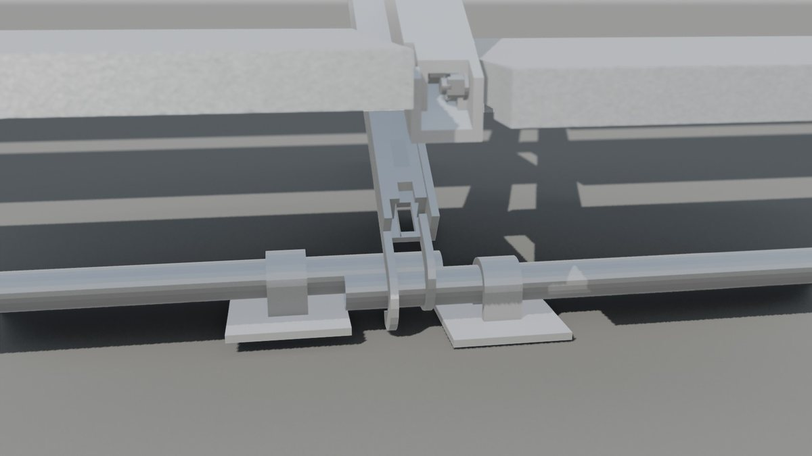<a class="mk" href="#c3" style="left:56.14%;top:47.34%" aria-label="Change 3">3</a><a class="mk" href="#c3" style="left:58.15%;top:15.86%" aria-label="Change 3">3</a></div>
      <figcaption><b>Fig C</b> Two units side by side: the left channel with the neighbour’s right rail inside</figcaption>
    </figure>
    <figure class="fig" id="figD">
      <div class="shot">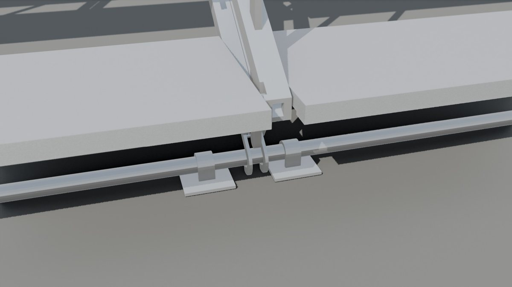<a class="mk" href="#c4" style="left:50.0%;top:46.28%" aria-label="Change 4">4</a></div>
      <figcaption><b>Fig D</b> Side by side: one handrail pole’s pin passes through both nested rails</figcaption>
    </figure>
    <figure class="fig" id="figE">
      <div class="shot">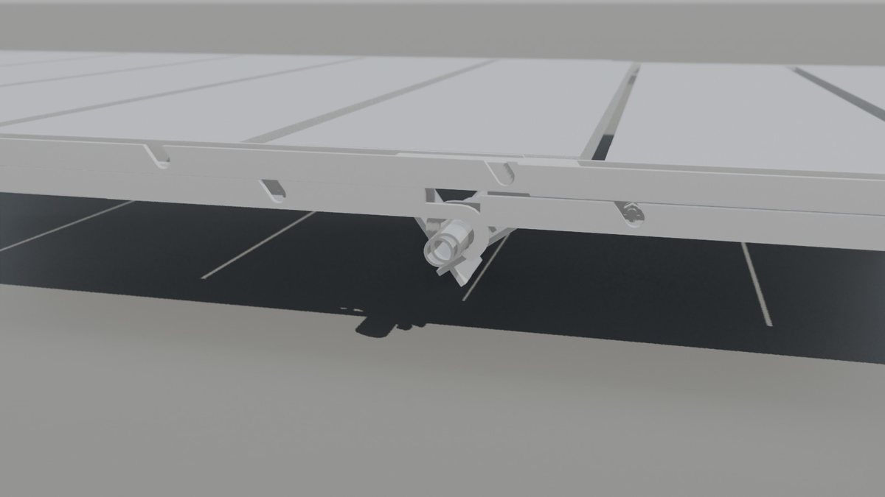<a class="mk" href="#c10" style="left:48.11%;top:42.13%" aria-label="Change 10">10</a></div>
      <figcaption><b>Fig E</b> Top hook dropping over the axle of the unit below</figcaption>
    </figure>
    <figure class="fig" id="figF">
      <div class="shot">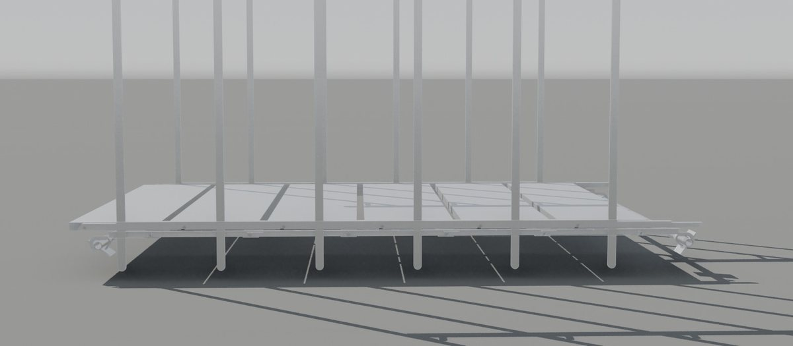<a class="mk" href="#c2" style="left:49.14%;top:67.37%" aria-label="Change 2">2</a></div>
      <figcaption><b>Fig F</b> Flat catwalk seen from the side (the scaffold supports it)</figcaption>
    </figure></div>
  </section>

  <section>
    <h2>All changes at a glance</h2>
    <div class="tw"><table>
      <thead><tr><th>#</th><th>Part</th><th>Now</th><th>Change to</th><th>Status</th></tr></thead>
      <tbody><tr><td class="mono"><a href="#c1">1</a></td><th scope="row">Steps</th><td>280 × 50 plank</td><td class="strong">285 × 40 hollow + 35 lip</td><td><span class="st pass">Change</span></td></tr><tr><td class="mono"><a href="#c2">2</a></td><th scope="row">Right rails</th><td>U 25 × ~21 / 25 × 20, 5 mm</td><td class="strong">lower U 25 × 42; upper no change</td><td><span class="st pass">Change</span></td></tr><tr><td class="mono"><a href="#c3">3</a></td><th scope="row">Left rails</th><td>U 35 × 25 / 35 × 25, 5 mm</td><td class="strong">lower U 35 × 47 (slot 42); upper no change</td><td><span class="st pass">Change</span></td></tr><tr><td class="mono"><a href="#c4">4</a></td><th scope="row">Handrail poles</th><td>12 flats 25 × 10</td><td class="strong">12 hollow 25 × 70 × 3 (see pin note)</td><td><span class="st pass">Change</span></td></tr><tr><td class="mono"><a href="#c10">10</a></td><th scope="row">Top hooks</th><td>5 mm plate</td><td class="strong">10 mm plate, 22 round opening</td><td><span class="st pass">Change</span></td></tr><tr><td class="mono"><a href="#c7">7</a></td><th scope="row">Handrail</th><td>25 × 25 solid</td><td class="strong">×48.3 × 3, +300 ends, joiner</td><td><span class="st part">To consider</span></td></tr><tr><td class="mono"><a href="#c5">5</a></td><th scope="row">Lock pins</th><td>bottom of the pole</td><td class="strong">no change</td><td><span class="st none">No change</span></td></tr><tr><td class="mono"><a href="#c6">6</a></td><th scope="row">Top rail</th><td>25 × 25 hollow</td><td class="strong">no change (padding added by us)</td><td><span class="st none">No change</span></td></tr><tr><td class="mono"><a href="#c8">8</a></td><th scope="row">Middle rail</th><td>—</td><td class="strong">not fitted</td><td><span class="st none">No change</span></td></tr><tr><td class="mono"><a href="#c9">9</a></td><th scope="row">Toe board</th><td>—</td><td class="strong">not fitted</td><td><span class="st none">No change</span></td></tr><tr><td class="mono"><a href="#c11">11</a></td><th scope="row">Feet</th><td>4 small feet</td><td class="strong">scaffold supports the unit</td><td><span class="st none">No change</span></td></tr><tr><td class="mono"><a href="#c12">12</a></td><th scope="row">Centre handrail</th><td>—</td><td class="strong">not needed</td><td><span class="st none">No change</span></td></tr><tr><td class="mono"><a href="#c13">13</a></td><th scope="row">ID plate</th><td>—</td><td class="strong">after finalisation</td><td><span class="st test">Later</span></td></tr></tbody>
    </table></div>
  </section>

  <section>
    <h2>The changes</h2>
    <div class="cards">
    <article class="card" id="c1">
      <header><span class="num">1</span><div><h3>Steps (treads) </h3><p class="meta">6 per unit · see Fig A</p></div></header>
      <div class="nowto">
        <div class="now"><span>Now</span><p>Flat plank 280 deep × 50 thick.</p></div>
        <div class="to"><span>Change to</span><p>Hollow plank 285 deep × 40 thick: 1.8 mm walls, 5 ribs inside, serrated top. Add a lip turned down 35 mm along the front edge, 2 mm thick, stopping 30 mm short of each end so it clears the guide rails. Length stays 1,236. A 55 mm contrasting strip on the front and back edges (colour only).</p></div>
      </div>
      <div class="refs">
        <figure>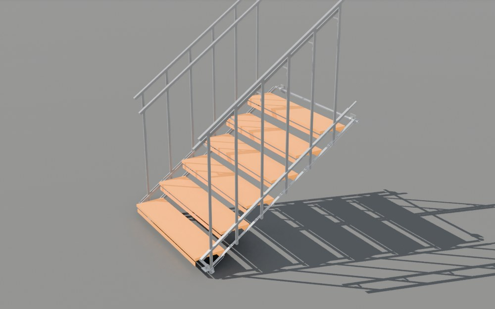<figcaption>Where on the unit</figcaption></figure>
        <figure>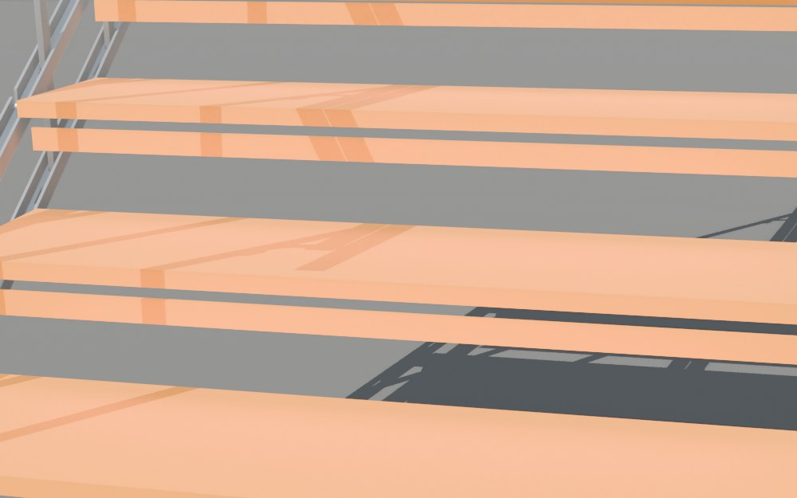<figcaption>Close-up</figcaption></figure>
      </div>
      <div class="how"><span>In SketchUp</span><ul><li>Keep the walking surface at exactly the same height as now: the plank gets thinner from underneath, so every riser stays 175.</li><li>Keep the pin holes exactly where they are.</li><li>You may model it solid and label it “hollow, 1.8 mm walls, 5 ribs”.</li></ul></div>
      
      <div class="draw"><svg class="sec" viewBox="0 0 1180 280" role="img" aria-label="Tread: 280 x 50 plank now, 285 x 40 hollow plank with a 35 mm front lip after"><text class="tag" x="10" y="16" text-anchor="start">NOW</text><rect class="old" x="260" y="40" width="280" height="50"/><rect class="old" x="10" y="215" width="280" height="50"/><line class="dim" x1="272" y1="90" x2="272" y2="215"/><text class="lbl" x="278" y="158" text-anchor="start">gap 125</text><text class="lbl" x="400" y="70" text-anchor="middle">280 × 50</text><text class="tag" x="600" y="16" text-anchor="start">CHANGE TO</text><rect class="new" x="850" y="40" width="285" height="40"/><rect class="void" x="853" y="43" width="279" height="34"/><line class="rib" x1="921.25" y1="42" x2="921.25" y2="78"/><line class="rib" x1="992.5" y1="42" x2="992.5" y2="78"/><line class="rib" x1="1063.75" y1="42" x2="1063.75" y2="78"/><rect class="new" x="850" y="80" width="2.5" height="35"/><rect class="new" x="600" y="215" width="285" height="40"/><rect class="void" x="603" y="218" width="279" height="34"/><line class="rib" x1="671.25" y1="217" x2="671.25" y2="253"/><line class="rib" x1="742.5" y1="217" x2="742.5" y2="253"/><line class="rib" x1="813.75" y1="217" x2="813.75" y2="253"/><rect class="new" x="600" y="255" width="2.5" height="35"/><line class="dim" x1="862" y1="115" x2="862" y2="215"/><text class="lbl" x="868" y="170" text-anchor="start">gap 100</text><text class="lbl" x="992" y="66" text-anchor="middle">285 × 40</text><text class="lbl" x="844" y="110" text-anchor="end">lip 35</text></svg></div>
      <div class="whyload">
        <div class="why"><span>Why (code sheet)</span><ul><li><span class="ref">R7</span>Open gap between steps ≤ 120 mm (100 recommended), so a child cannot slip through. Now 125 mm; the thinner step alone would make it 135. The lip brings it to 100.</li><li><span class="ref">R48</span>Gap between planks on the flat catwalk ≤ 25 mm. Now 25.2; the deeper 285 plank makes it 20.</li><li><span class="ref">R12</span>Uniform risers: why the walking surface must not move.</li><li><span class="ref">R17</span>55 mm contrasting nosings on both edges of each step.</li></ul></div>
        <div class="load"><span>Load effect</span><p>Carries the crowd (7.5 kN/m²) and one foot (4 kN on a 200 mm square) across the 1.24 m span. The lip is part of the section and stiffens the front edge.</p>
          <div class="ba"><div><i>Now</i>Strong but heavy: 7.67 kN point capacity, 7.09 kg each</div><div><i>After</i>4 kN point at 0.83 of capacity, 4.57 kg each (−15 kg per unit)</div></div></div>
      </div>
    </article>
    <article class="card" id="c2">
      <header><span class="num">2</span><div><h3>Right-hand guide rails (keep the U shape) </h3><p class="meta">2 per unit (upper + lower) · see Fig A · B · F</p></div></header>
      <div class="nowto">
        <div class="now"><span>Now</span><p>Upside-down U, 25 wide × about 20 deep, 5 mm walls, open underneath.</p></div>
        <div class="to"><span>Change to</span><p>Keep the upside-down U, 25 wide, 5 mm walls. Lower rail: 42 deep (now about 21); the extra depth goes downwards. Upper rail: no change (25 × 20). With 6 mm walls the lower rail can be 39 deep instead. These sizes assume the scaffold supports the flat catwalk under its middle; with support at the two ends only, the lower rail would need to be 109 deep.</p></div>
      </div>
      <div class="refs">
        <figure>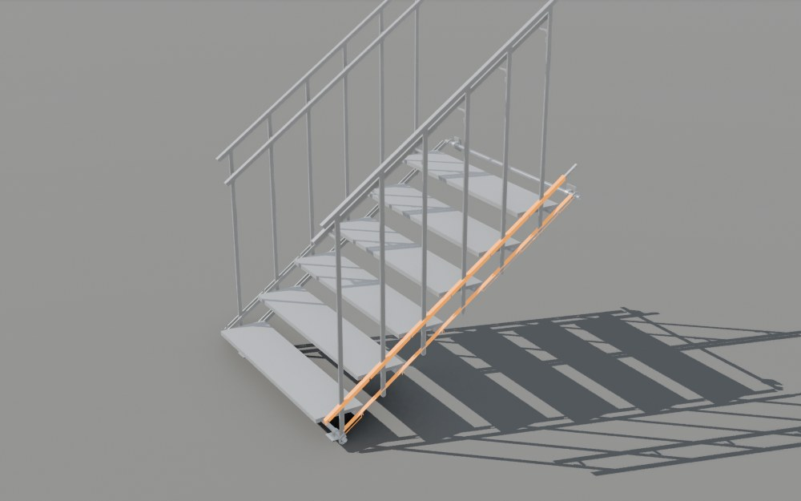<figcaption>Where on the unit</figcaption></figure>
        <figure>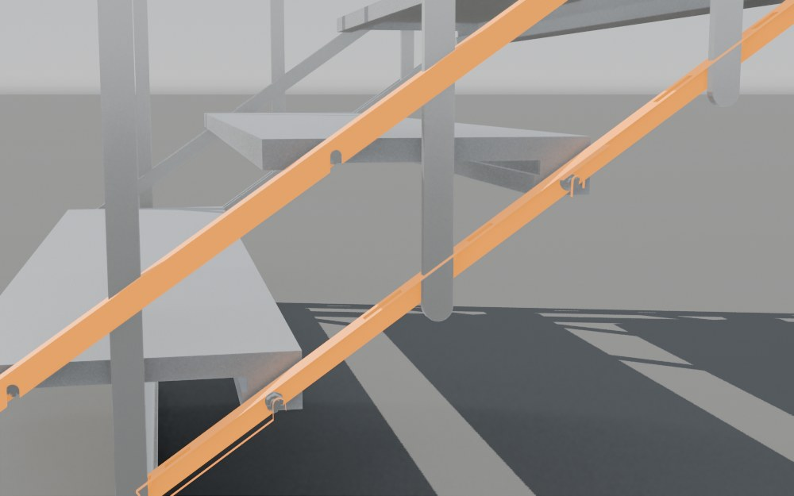<figcaption>Close-up</figcaption></figure>
      </div>
      <div class="how"><span>In SketchUp</span><ul><li>Keep the 25 mm outside width, the hole centres and the axle position.</li><li>Thicken the walls inwards (the open slot underneath gets narrower) and extend the depth as listed.</li></ul></div>
      
      
      <div class="whyload">
        <div class="why"><span>Why (code sheet)</span><ul><li><span class="ref">R113 R128</span>Stairs and platforms (the catwalk) must carry 7.5 kN/m² of crowd.</li><li><span class="ref">R115</span>Deflection no more than span/250 (7.3 mm) under the crowd, under 10 mm for one person.</li><li><span class="ref">R180</span>Uneven crowds: one part loaded, the rest empty.</li></ul></div>
        <div class="load"><span>Load effect</span><p>These rails are the side beams: every step hangs its load on them. The right-hand side is the weaker one and governs.</p>
          <div class="ba"><div><i>Now</i>At 7.5 kN/m² loaded 3.7× over capacity on the stair</div><div><i>After</i>Stair 0.97, flat catwalk 0.62; deflection 0.47 of the limit</div></div></div>
      </div>
    </article>
    <article class="card" id="c3">
      <header><span class="num">3</span><div><h3>Left-hand guide rails (keep the U channel) </h3><p class="meta">2 per unit (upper + lower) · see Fig C</p></div></header>
      <div class="nowto">
        <div class="now"><span>Now</span><p>Open-top U channel 35 wide × 25 deep, 5 mm walls, 25 mm slot.</p></div>
        <div class="to"><span>Change to</span><p>Keep the open-top U, 35 wide, 5 mm walls, 25 mm slot. Lower channel: 47 deep overall with a 42 deep slot, so the new 42 deep right rail of the next unit still drops fully in (the load alone needs 40). Upper channel: no change (35 × 25). With support at the two ends only it would need to be 114 deep.</p></div>
      </div>
      <div class="refs">
        <figure>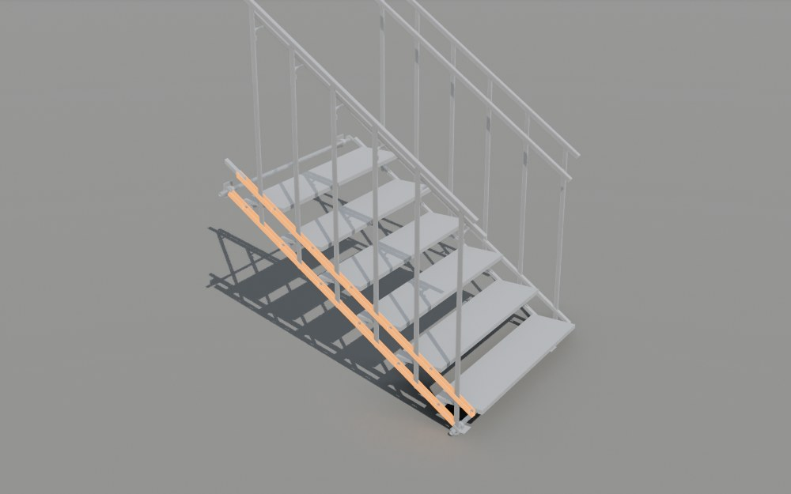<figcaption>Where on the unit</figcaption></figure>
        <figure>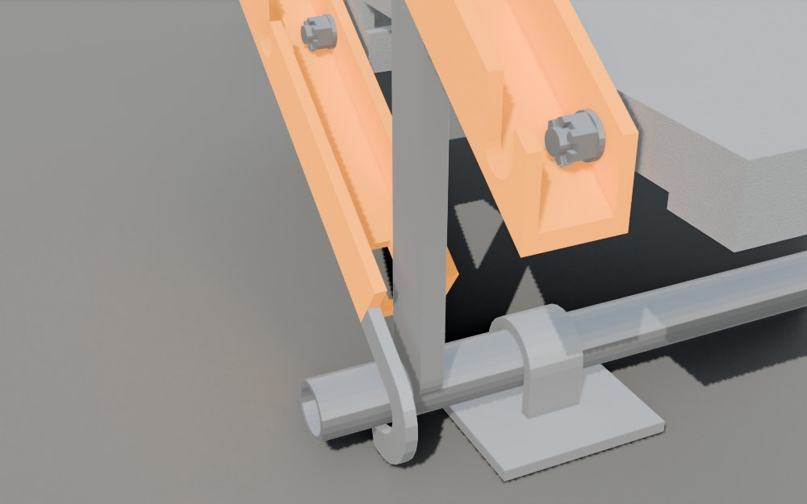<figcaption>Close-up</figcaption></figure>
      </div>
      <div class="how"><span>In SketchUp</span><ul><li>Keep the slot centre-line and width (25 mm).</li><li>Thicken the walls outwards and the floor downwards; deepen the slot to match the right rail.</li></ul></div>
      
      <div class="draw"><svg class="sec" viewBox="0 0 760 231.0" role="img" aria-label="Lower guide rail pair: left U channel 35 x 47 with the right upside-down U 25 x 42 nested inside"><text class="tag" x="20" y="18" text-anchor="start">NOW (lower pair)</text><rect class="old" x="30" y="40" width="15.0" height="75.0"/><rect class="old" x="120.0" y="40" width="15.0" height="75.0"/><rect class="old" x="30" y="100.0" width="105.0" height="15.0"/><rect class="old2" x="45.0" y="37.0" width="75.0" height="15.0"/><rect class="old2" x="45.0" y="37.0" width="15.0" height="63.0"/><rect class="old2" x="105.0" y="37.0" width="15.0" height="63.0"/><text class="lbl" x="82.5" y="137.0" text-anchor="middle">35 × 25 + 25 × 21</text><text class="tag" x="260" y="18" text-anchor="start">CHANGE TO (lower pair)</text><rect class="new" x="270" y="40" width="15.0" height="141.0"/><rect class="new" x="360.0" y="40" width="15.0" height="141.0"/><rect class="new" x="270" y="166.0" width="105.0" height="15.0"/><rect class="new2" x="285.0" y="40.0" width="75.0" height="15.0"/><rect class="new2" x="285.0" y="40.0" width="15.0" height="126.0"/><rect class="new2" x="345.0" y="40.0" width="15.0" height="126.0"/><text class="lbl" x="322.5" y="203.0" text-anchor="middle">35 × 47 + 25 × 42</text><text class="note" x="420" y="60" text-anchor="start">left channel: 5 mm walls, 25 slot, 42 deep</text><text class="note2" x="420" y="80" text-anchor="start">right rail: upside-down U, 5 mm, 42 deep</text><text class="lbl" x="420" y="110" text-anchor="start">upper pair: no change</text><text class="lbl" x="420" y="128" text-anchor="start">(35 × 25 with 25 × 20)</text><text class="lbl" x="420" y="160" text-anchor="start">both grow downwards; the right rail</text><text class="lbl" x="420" y="178" text-anchor="start">still drops fully into the slot</text></svg></div>
      <div class="whyload">
        <div class="why"><span>Why (code sheet)</span><ul><li><span class="ref">R113 R115</span>Same crowd load and deflection limit as change 2.</li><li><span class="ref">R103 R105</span>Side-by-side joins must stay aligned and flush; that works because the rails nest.</li></ul></div>
        <div class="load"><span>Load effect</span><p>Same side-beam job as change 2 on the other side of the unit.</p>
          <div class="ba"><div><i>Now</i>At 7.5 kN/m² loaded 2.5× over capacity</div><div><i>After</i>Stair 0.73, flat catwalk 0.47</div></div></div>
      </div>
    </article>
    <article class="card" id="c4">
      <header><span class="num">4</span><div><h3>Handrail poles: thicker, same layout </h3><p class="meta">12 per unit (unchanged) · see Fig A · B</p></div></header>
      <div class="nowto">
        <div class="now"><span>Now</span><p>12 flat poles 25 × 10, one at every step on each side; the bottom of each pole is its lock pin.</p></div>
        <div class="to"><span>Change to</span><p>Keep all 12 poles and their positions; the pin stays part of the pole. To carry the sheet’s barrier loads each pole must be much stiffer across the stair: hollow 25 × 70 × 3 mm for the full crowd push (3.0 kN/m), or 25 × 50 × 3 mm for the point loads only (1.5 kN on a post, 1.25 kN on the rail). Solid alternatives: 25 × 46 and 25 × 32, about twice the weight.</p></div>
      </div>
      <div class="refs">
        <figure>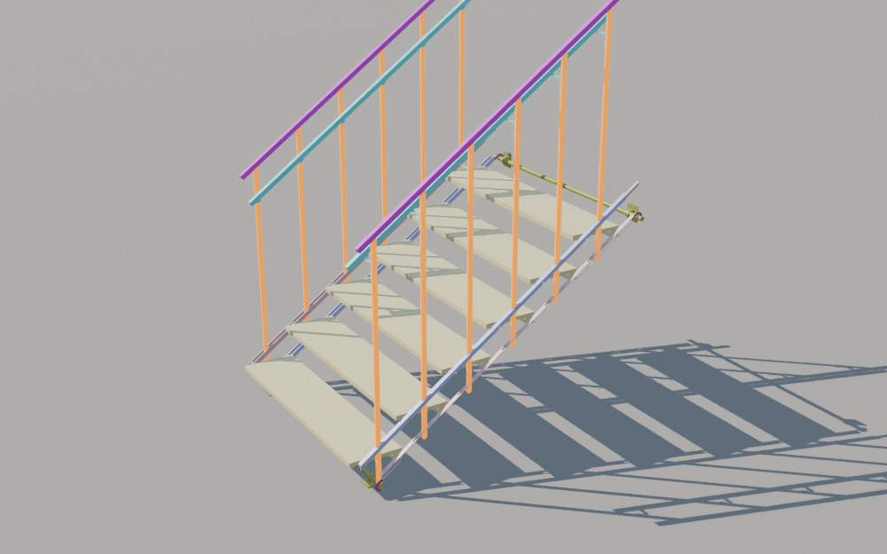<figcaption>Where on the unit</figcaption></figure>
        <figure>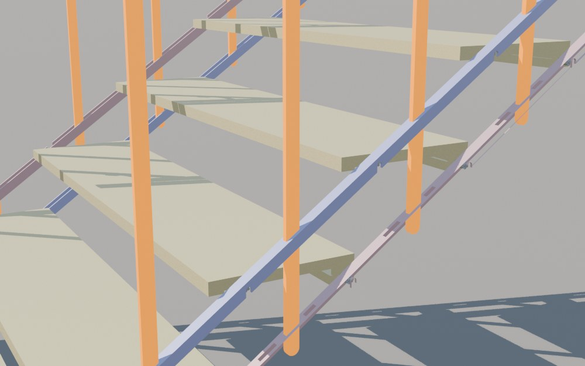<figcaption>Close-up</figcaption></figure>
      </div>
      <div class="how"><span>In SketchUp</span><ul><li>Thicken each pole across the stair (the direction people push); keep 25 along the stair unless noted.</li><li>The pin at the bottom of the pole passes through both guide rails: its thickness sets the hole size in the rails (see the note below).</li></ul></div>
      <p class="cnote">The catch: the bending is largest exactly where the pole enters the guide rails, and that part is the pin, which has to fit through the 25 mm-wide rails. A 25 × 10 pin carries only 0.095 kNm, about 1/16 of what the crowd push needs and 1/10 of the point loads. A pole is only as strong as its pin, so thickening the pole above the rails alone won’t pass. Either the rails get a socket that grips a full-size pole, or the handrail is treated as a handrail only and the crowd barrier comes from the scaffold side.</p>
      <div class="draw"><svg class="sec" viewBox="0 0 760 254.0" role="img" aria-label="Handrail pole: flat 25 x 10 now; hollow 25 x 50 x 3 or 25 x 70 x 3 after"><text class="tag" x="10" y="18" text-anchor="start">NOW</text><rect class="old" x="30" y="50" width="55.00000000000001" height="22.0"/><text class="lbl" x="57.5" y="94.0" text-anchor="middle">flat 25 × 10</text><text class="tag" x="200" y="18" text-anchor="start">CHANGE TO (either)</text><rect class="new2" x="200" y="40" width="55.00000000000001" height="110.00000000000001"/><rect class="void" x="206.6" y="46.6" width="41.800000000000004" height="96.80000000000001"/><text class="lbl" x="227.5" y="170.0" text-anchor="middle">25 × 50 × 3</text><text class="note2" x="227.5" y="188.0" text-anchor="middle">point loads only</text><rect class="new" x="370" y="40" width="55.00000000000001" height="154.0"/><rect class="void" x="376.6" y="46.6" width="41.800000000000004" height="140.8"/><text class="lbl" x="397.5" y="214.0" text-anchor="middle">25 × 70 × 3</text><text class="note" x="397.5" y="232.0" text-anchor="middle">full crowd push</text><text class="lbl" x="560" y="60" text-anchor="start">↕ people push this way</text><text class="note2" x="560" y="80" text-anchor="start">(across the stair)</text></svg></div>
      <div class="whyload">
        <div class="why"><span>Why (code sheet)</span><ul><li><span class="ref">R142</span>The top rail must hold a crowd pushing 3.0 kN per metre (circulation routes).</li><li><span class="ref">R179</span>Each post must hold 1.5 kN at the top.</li><li><span class="ref">R143</span>1.25 kN on the top rail between posts.</li></ul></div>
        <div class="load"><span>Load effect</span><p>Every sideways push on the rails ends up bending the poles, most of all where they enter the guide rails.</p>
          <div class="ba"><div><i>Now</i>Crowd push 20× over, post load 6.6× over</div><div><i>After</i>25×70×3: full crowd push at 0.90 · 25×50×3: point loads at 0.82</div></div></div>
      </div>
    </article>
    <article class="card" id="c10">
      <header><span class="num">10</span><div><h3>Top hooks </h3><p class="meta">2 per unit · see Fig E</p></div></header>
      <div class="nowto">
        <div class="now"><span>Now</span><p>5 mm plate with about 12 mm of metal around the hook opening.</p></div>
        <div class="to"><span>Change to</span><p>10 mm plate with at least 22 mm of metal around the opening. The opening itself stays the same size (fits the axle).</p></div>
      </div>
      <div class="refs">
        <figure>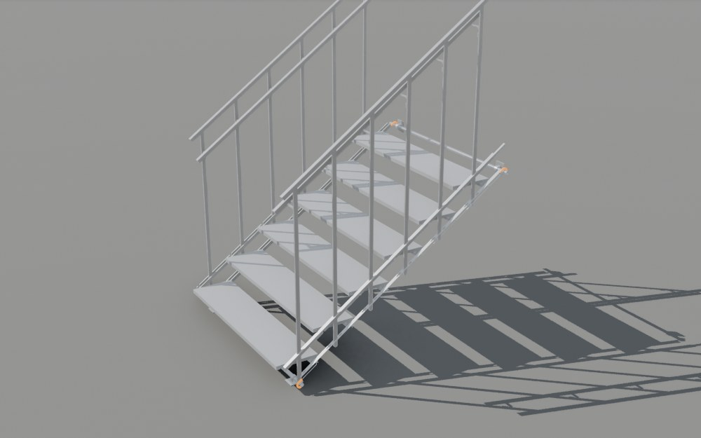<figcaption>Where on the unit</figcaption></figure>
        <figure>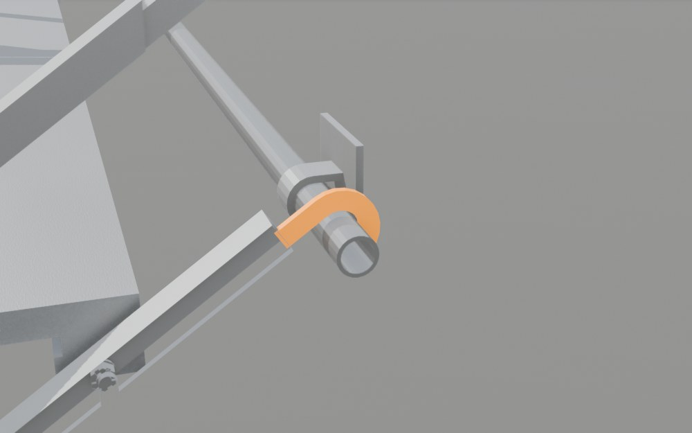<figcaption>Close-up</figcaption></figure>
      </div>
      <div class="how"><span>In SketchUp</span><ul><li>Thicken the hook plate to 10 mm and grow the outline outwards; don’t change the opening.</li></ul></div>
      
      <div class="draw"><svg class="sec" viewBox="0 0 560 200" role="img" aria-label="Top hook: 5 mm plate with 11.9 mm of metal now, 10 mm plate with at least 22 mm after"><text class="tag" x="10" y="18" text-anchor="start">NOW</text><text class="tag" x="260" y="18" text-anchor="start">CHANGE TO</text><path class="old" d="M 36.3 110 A 63.7 63.7 0 0 1 163.7 110 L 163.7 135 L 132.76 135 L 132.76 110 A 32.76 32.76 0 0 0 67.24000000000001 110 L 67.24000000000001 105 L 36.3 105 Z"/><circle class="axle" cx="100" cy="110" r="32.76"/><text class="lbl" x="100" y="170" text-anchor="middle">5 mm plate, 11.9 mm round the hook</text><path class="new" d="M 270.03999999999996 110 A 89.96000000000001 89.96000000000001 0 0 1 449.96000000000004 110 L 449.96000000000004 135 L 392.76 135 L 392.76 110 A 32.76 32.76 0 0 0 327.24 110 L 327.24 105 L 270.03999999999996 105 Z"/><circle class="axle" cx="360" cy="110" r="32.76"/><text class="lbl" x="360" y="170" text-anchor="middle">10 mm plate, 22 mm round the hook</text></svg></div>
      <div class="whyload">
        <div class="why"><span>Why (code sheet)</span><ul><li><span class="ref">R113 R170</span>The hook carries the whole top end of the stair when it hangs from a bar or the next unit.</li></ul></div>
        <div class="load"><span>Load effect</span><p>Half of the stair’s load goes through the two top hooks.</p>
          <div class="ba"><div><i>Now</i>1.36 kN capacity vs 4.1 kN needed (3× short)</div><div><i>After</i>Sized for the full top reaction, about 0.9 of capacity</div></div></div>
      </div>
    </article>
    <article class="card consider" id="c7">
      <header><span class="num">7</span><div><h3>Handrail (to consider) <span class="tagc">to consider</span></h3><p class="meta">2 per unit · see Fig A</p></div></header>
      <div class="nowto">
        <div class="now"><span>Now</span><p>25 × 25 solid square bar, ending about 80 mm past the end steps.</p></div>
        <div class="to"><span>Change to</span><p>Round tube Ø48.3 × 3 mm with closed ends; on the standard (35°) stair set run it 300 mm past the top and bottom steps. In the double stair the two units’ handrails join into one: plug-in 300 mm ends and a joiner at the unit joint.</p></div>
      </div>
      <div class="refs">
        <figure>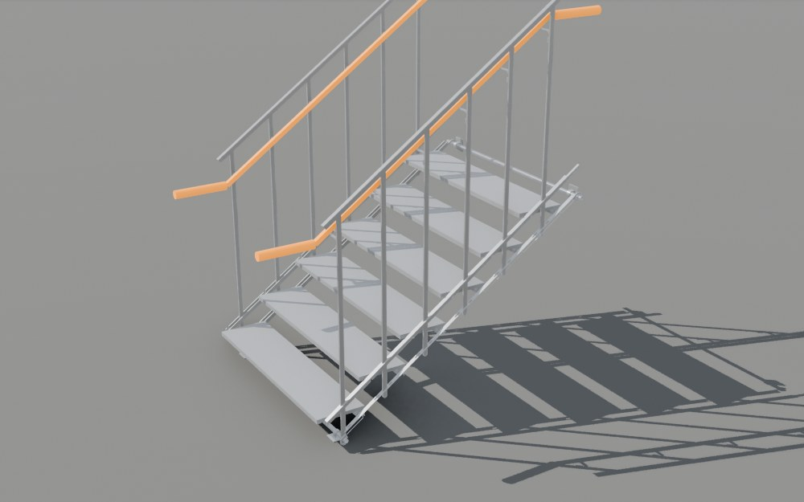<figcaption>Where on the unit</figcaption></figure>
        <figure>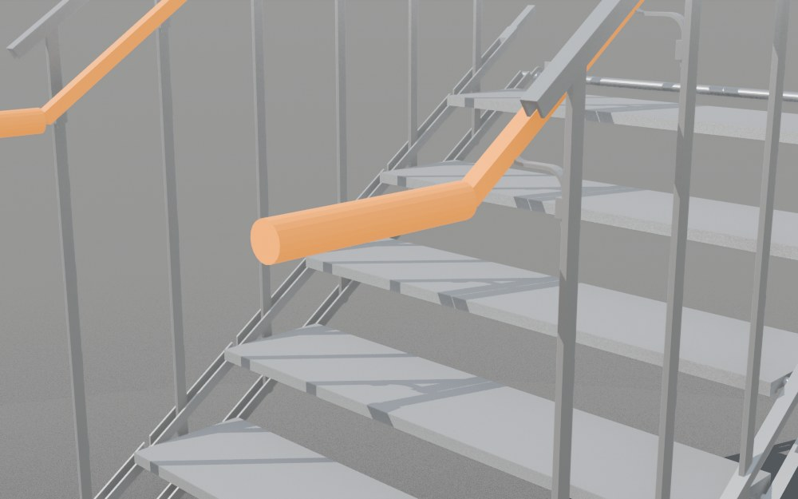<figcaption>Close-up</figcaption></figure>
      </div>
      <div class="how"><span>In SketchUp</span><ul><li>Only if you decide to adopt it: replace the profile, keep its height, add the extensions.</li></ul></div>
      
      
      <div class="whyload">
        <div class="why"><span>Why (code sheet)</span><ul><li><span class="ref">R64</span>Grip size 25–50 mm (40 target).</li><li><span class="ref">R19 R71</span>300 mm past both ends, closed ends.</li><li><span class="ref">R72</span>Continuous over the whole flight, including across the double-stair joint.</li></ul></div>
        <div class="load"><span>Load effect</span><p>The 300 mm extension sticks out past the last post like a diving board; a 1.25 kN hand load on its tip sets the tube size.</p>
          <div class="ba"><div><i>Now</i>Square bar, too short</div><div><i>After</i>1.25 kN on the tip at 0.94 of capacity</div></div></div>
      </div>
    </article></div>
  </section>

  <section id="decided">
    <h2>Decided: no drawing work</h2>
    <p>Your decisions on the other items, and what each one means against the sheet.</p>
    <div class="tw"><table>
      <thead><tr><th>#</th><th>Item</th><th>Decision</th><th>Against the sheet</th></tr></thead>
      <tbody><tr><td class="mono"><span id="c5">5</span></td><th scope="row">Lock pins</th><td>No change: the pin is the bottom of each handrail pole, one piece (see change 4).</td><td>R78 R104: the pole-pins lock the steps; a latch so a handrail can’t lift out by accident is still to design.</td></tr><tr><td class="mono"><span id="c6">6</span></td><th scope="row">Top rail (guardrail)</th><td>No change to the rail. We will add circular padding on top of it; this is noted only, not part of this brief.</td><td>R63 height 1,127 unchanged.</td></tr><tr><td class="mono"><span id="c8">8</span></td><th scope="row">Middle / child rail</th><td>Not fitted (your decision).</td><td>R65/R68 (no gap over 470 mm; mesh ≤ 100 mm for the public) and R70 (child rail ~600) are then not met by the unit: the scaffold’s edge protection or ≤ 100 mm mesh must cover the side.</td></tr><tr><td class="mono"><span id="c9">9</span></td><th scope="row">Toe board</th><td>Not fitted (your decision).</td><td>R66 (150 mm toe board) not met by the unit; cover it on site if the edge is open.</td></tr><tr><td class="mono"><span id="c11">11</span></td><th scope="row">Feet</th><td>Not fitted: the scaffold supports the unit.</td><td>R73 footplates move to the scaffold. Where the flat catwalk is used, a scaffold support under its middle keeps the rail sizes in changes 2 and 3 small.</td></tr><tr><td class="mono"><span id="c12">12</span></td><th scope="row">Centre handrail between side-by-side units</th><td>Not needed (your decision).</td><td>R109 prefers a centre rail (and assist elements) on stairs over 28° and 1.8 m wide, which a side-by-side pair is: accept through the venue risk assessment.</td></tr><tr><td class="mono"><span id="c13">13</span></td><th scope="row">ID and rating plate</th><td>Later, after the design is final.</td><td>R93.</td></tr></tbody>
    </table></div>
  </section>

  <section id="compliance">
    <h2>Checked against the code compliance sheet</h2>
    <p>Every row of the Aug-2026 events sheet that applies to this unit, and how the changes above meet it. Row numbers match the sheet.</p>
    <div class="tw"><table>
      <thead><tr><th>Row</th><th>Requirement</th><th>How it is met</th><th>Status</th></tr></thead>
      <tbody><tr><td class="mono">R3</td><td>Clear width 1,100 (industry anchor)</td><td>1,023 between handrails, unchanged: confirm by crowd-flow calculation</td><td><span class="st open">Open</span></td></tr><tr><td class="mono">R4 R5</td><td>Going ≥ 250 with riser ≤ 175</td><td>Unchanged 250 / 175 on the standard stair (at the limit)</td><td><span class="st pass">Pass</span></td></tr><tr><td class="mono">R6</td><td>Closed risers preferred</td><td>Lip part-closes each riser (#1); preferred, not required</td><td><span class="st part">Partly</span></td></tr><tr><td class="mono">R7</td><td>Open gap between steps ≤ 120 (100 rec)</td><td>100 mm with the 35 mm lip (#1)</td><td><span class="st pass">Pass</span></td></tr><tr><td class="mono">R8</td><td>2 × rise + going 540–660 (guidance only)</td><td>600</td><td><span class="st pass">Pass</span></td></tr><tr><td class="mono">R9</td><td>Pitch ≤ 35°</td><td>Standard 35°; steep 49.4° is crew-only</td><td><span class="st part">Partly</span></td></tr><tr><td class="mono">R10 R13 R14 R15</td><td>Landings sized by the flow calculation, ≥ gangway width</td><td>Where flights join or the catwalk is used as a landing: set on the site layout</td><td><span class="st site">Site / scaffold</span></td></tr><tr><td class="mono">R11</td><td>Headroom ≥ 2,100</td><td>Site layout</td><td><span class="st site">Site / scaffold</span></td></tr><tr><td class="mono">R12</td><td>Uniform risers, also with connecting stairs</td><td>Walking surface kept at the same height (#1); check the step at the end-to-end joint</td><td><span class="st part">Partly</span></td></tr><tr><td class="mono">R16 R94</td><td>Slip PTV ≥ 36 (40 events)</td><td>Serrated top; pendulum test on the finished step</td><td><span class="st test">Test</span></td></tr><tr><td class="mono">R17</td><td>55 mm contrasting nosings, both edges</td><td>#1</td><td><span class="st pass">Pass</span></td></tr><tr><td class="mono">R18 R109</td><td>Centre rail preferred over 28° and 1,800 wide</td><td>Not fitted by decision (#12): accept through the venue risk assessment</td><td><span class="st part">Partly</span></td></tr><tr><td class="mono">R19 R64 R71 R72</td><td>Handrail: grip 25–50, 300 past ends, closed, continuous</td><td>Change 7 is still to be decided</td><td><span class="st open">Open</span></td></tr><tr><td class="mono">R48</td><td>Deck gap ≤ 25</td><td>20 mm (#1)</td><td><span class="st pass">Pass</span></td></tr><tr><td class="mono">R63 R69</td><td>Top rail ≥ 1,100, both sides, full length</td><td>1,127 both sides, unchanged; circular padding added on top</td><td><span class="st pass">Pass</span></td></tr><tr><td class="mono">R65 R68</td><td>No gap in the side over 470 (≤ 100 mesh for the public)</td><td>About 1,000 mm below the handrail without a middle rail (#8); the scaffold edge protection or ≤ 100 mm mesh must cover it</td><td><span class="st site">Site / scaffold</span></td></tr><tr><td class="mono">R66</td><td>Toe board 150</td><td>Not fitted (#9): cover on site where the edge is open</td><td><span class="st site">Site / scaffold</span></td></tr><tr><td class="mono">R67</td><td>Handrail clear of objects ≥ 50</td><td>About 95 mm off the poles, unchanged</td><td><span class="st pass">Pass</span></td></tr><tr><td class="mono">R70</td><td>Child rail about 600</td><td>Not fitted (#8): site / scaffold</td><td><span class="st site">Site / scaffold</span></td></tr><tr><td class="mono">R73 R74–R77</td><td>Footplates, base jacks, plumb 1:100, bracing, bearing</td><td>Scaffold scope (#11); the engineer gives the unit’s support reactions</td><td><span class="st site">Site / scaffold</span></td></tr><tr><td class="mono">R78 R104</td><td>Positive, captive locking, no unintended release</td><td>Pins are the pole ends (#5); a latch so a handrail can’t lift out is still to design</td><td><span class="st open">Open</span></td></tr><tr><td class="mono">R90</td><td>Effective going: going + 15 mm nosing</td><td>285 step on a 250 going: 35 mm overlap</td><td><span class="st pass">Pass</span></td></tr><tr><td class="mono">R93</td><td>ID and rating plate</td><td>After finalisation (#13)</td><td><span class="st open">Open</span></td></tr><tr><td class="mono">R95</td><td>No finger traps in moving joints</td><td>The 20 mm gap between steps closes while folding: procedure, or 298-deep steps</td><td><span class="st open">Open</span></td></tr><tr><td class="mono">R96</td><td>Instruction manual and method statement</td><td>To write with the final design</td><td><span class="st open">Open</span></td></tr><tr><td class="mono">R103 R108</td><td>Module joins: gap ≤ 25, level within 4</td><td>Nested join 5 mm, same level; double join 19 mm</td><td><span class="st pass">Pass</span></td></tr><tr><td class="mono">R106</td><td>Post spacing (1.2 m for class C)</td><td>305 mm: a pole at every step</td><td><span class="st pass">Pass</span></td></tr><tr><td class="mono">R113 R128 R115 R180</td><td>Crowd 7.5 kN/m² (stairs and platforms), span/250, &lt; 10 mm under one person, pattern loads</td><td>Checked for #1–#3 with load patterns; holds if those changes are adopted and the flat catwalk has a middle support</td><td><span class="st cond">If adopted</span></td></tr><tr><td class="mono">R114</td><td>4 kN on one step</td><td>0.83 (#1)</td><td><span class="st pass">Pass</span></td></tr><tr><td class="mono">R116 R176</td><td>Sideways crowd load and 10 % sway on the whole stair</td><td>Into the hooks and the scaffold: engineer to check</td><td><span class="st open">Open</span></td></tr><tr><td class="mono">R142 R179 R143</td><td>Barrier 3.0 kN/m, post 1.5 kN, rail point 1.25 kN</td><td>Only with the pole thickness in #4 and a pin section that carries it</td><td><span class="st part">Partly</span></td></tr><tr><td class="mono">R142</td><td>Barrier 5.0 kN/m where people gather to watch</td><td>Not covered</td><td><span class="st open">Open</span></td></tr><tr><td class="mono">R150 R170</td><td>Connections: crowd uplift and tie-down</td><td>Top hooks 10 mm (#10); hooks resting on the axle need a keeper against lifting; pole-pin holes in the 25 mm rail to check</td><td><span class="st part">Partly</span></td></tr><tr><td class="mono">R153 R169</td><td>Partial factors 1.35 G + 1.5 Q</td><td>All utilisations in this brief are factored this way</td><td><span class="st pass">Pass</span></td></tr><tr><td class="mono">R163</td><td>Aluminium EN AW-6082-T6</td><td>All parts</td><td><span class="st pass">Pass</span></td></tr><tr><td class="mono">R165 R166</td><td>Independent design check; load test 1.2×</td><td>For the final design</td><td><span class="st test">Test</span></td></tr><tr><td class="mono">R173 R98</td><td>Edge protection class</td><td>Class C for the 35° stair, class A for the flat catwalk; the 49.4° steep setting is outside EN 13374 (crew only)</td><td><span class="st test">Test</span></td></tr><tr><td class="mono">R177</td><td>f₁ ≥ 6 Hz vertical, ≥ 1.5 Hz sway</td><td>Stiffer rails raise f₁; confirm both on the scaffold</td><td><span class="st open">Open</span></td></tr><tr><td class="mono">R178</td><td>1.0 kN/m downwards on the top rail</td><td>Top rail unchanged, 305 mm between poles: passes easily; matters more because the padding invites sitting</td><td><span class="st pass">Pass</span></td></tr><tr><td class="mono">R181</td><td>Storm overturning (no people)</td><td>Site wind check with the scaffold ties</td><td><span class="st site">Site / scaffold</span></td></tr></tbody>
    </table></div>
  </section>

  <section>
    <h2>Decisions and checks outside the model</h2>
    <ul class="notmodel">
      <li><b>Finger trap while folding (R95).</b> The 20 mm gap between steps closes as the unit folds. Either fold only when nobody is on it, by trained crew (a written procedure), or make the steps 298 deep so the gap is 7 mm (+1.3 kg per unit).</li>
      <li><b>Scaffold support.</b> If the scaffold can support the flat catwalk under its middle, the rails in changes 2 and 3 stay much smaller than if it supports the ends only.</li>
      <li><b>Pole pins.</b> The pin section where each pole enters the rails is the weak point for the crowd push (see change 4); confirm the detail with the engineer, or give the edge its crowd barrier from the scaffold side.</li>
      <li><b>Viewing platforms (R142).</b> The barrier sizes are for 3.0 kN/m (people walking through). A catwalk where people stand and watch against the rail needs 5.0 kN/m.</li>
      <li><b>Engineer to check:</b> sideways crowd load and 10 % sway into the hooks and the scaffold (R116, R176); storm overturning with the scaffold ties (R181).</li>
      <li><b>Tests:</b> slip resistance of the step surface (R16), and a physical load test at 1.2× including class C edge protection at 35° (R166, R173).</li>
      <li><b>Steep 49.4°</b> is for crew only (step-ladder use), not the public (R9).</li>
    </ul>
  </section>

  <footer>
    <span>Sizes: the verified lightweight all-aluminium specification in the <a href="https://claude.ai/artifact/1ZGWmdUZyFepc1gGMdCkok">load verdict report</a>, with the left rails kept as open 4 mm channels so side-by-side units still nest (checked: 0.83 of capacity).</span>
    <span>Current design and ratings: <a href="https://claude.ai/artifact/GLipbqMzpRje8YZFLYTeL7">as-is datasheet</a>. Pictures: RIGGED3.blend, current geometry.</span>
  </footer>
</main>
